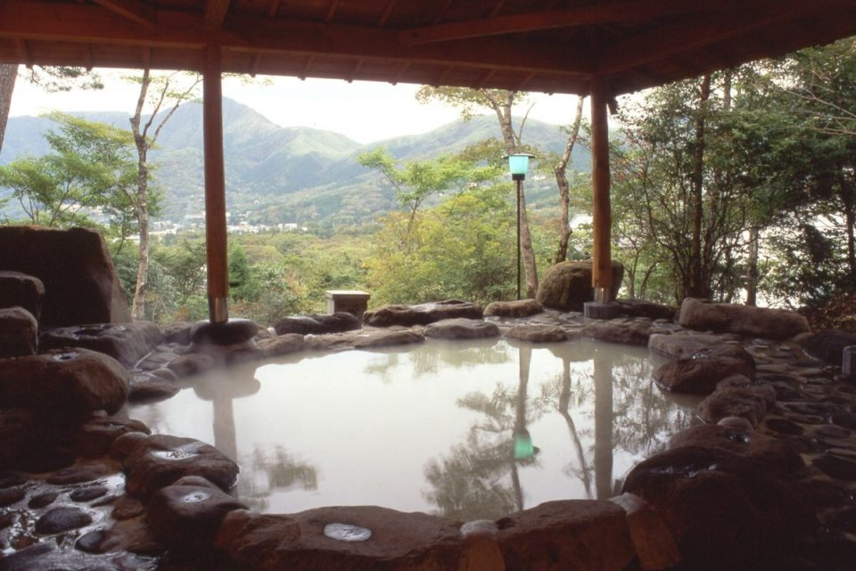
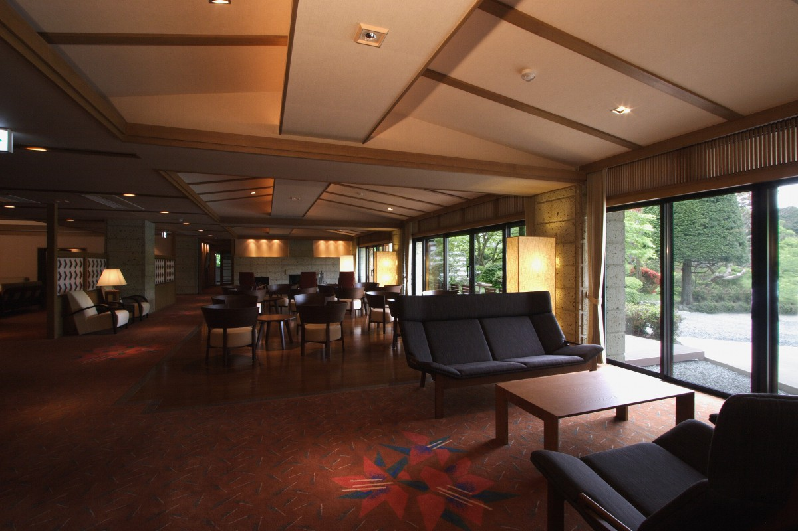
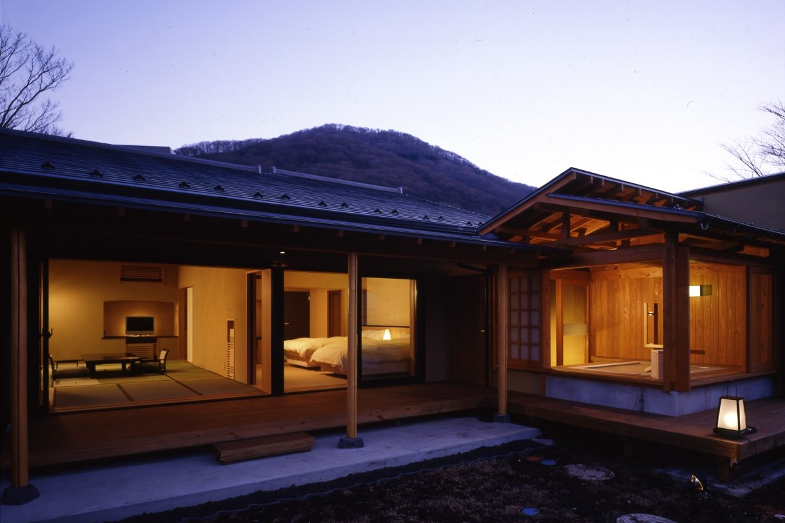
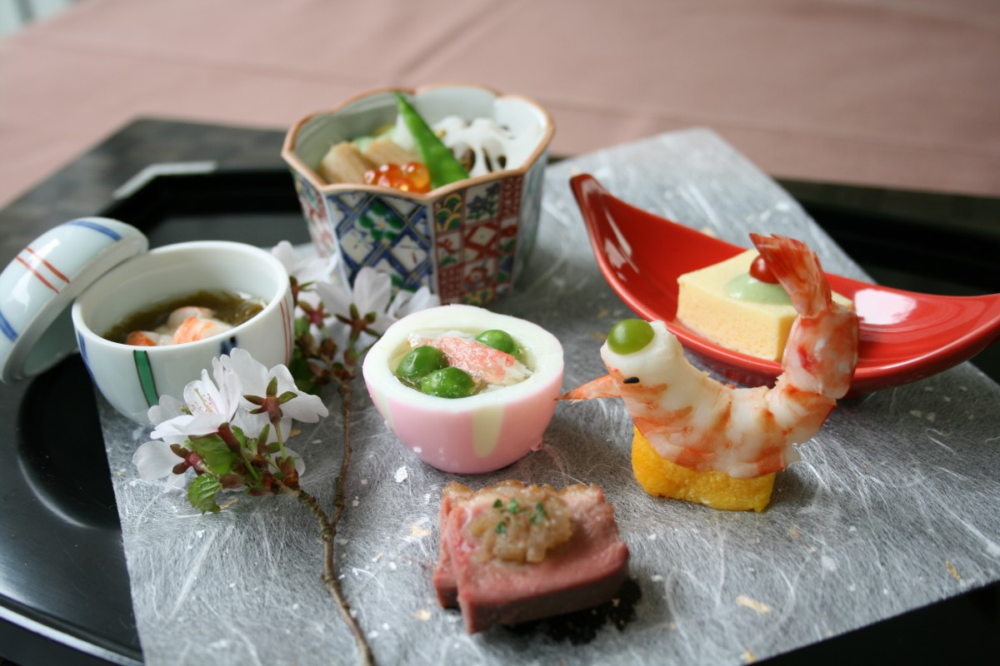

Префектура Канагава · Хаконэ, Сэнгокухара · где остановиться
«Сэнкёро бэттэй Оку-но кики»: белая вода Овакудани в каждом номере

В Сэнгокухаре, на высокогорном плато Хаконэ, с 1870 года принимает гостей рёкан «Сэнкёро». Его отдельный флигель «Оку-но кики» устроен так, чтобы белой водой и видом на горы можно было наслаждаться, не выходя из своего номера.
Хаконэ
Курорт на любой вкус
Хаконэ среди множества японских онсэнов один из самых любимых. Но каждый представляет его по-своему: одни вспоминают Гору, другие Хаконэ-Юмото, третьи озеро Аси. Пейзажи разные, и воздух в каждом уголке свой. Общее у них одно: из земли бьёт горячая вода, и где-нибудь поблизости непременно поднимается пар.
Вокруг источников выросло множество гостиниц, и у каждой свои постоянные гости. Кто-то едет за оживлением, кто-то за тишиной, и Хаконэ находит место для тех и других. Наверное, поэтому сюда и возвращаются.

Сэнгокухара
Рёкан, в честь которого назвали остановку
Сэнгокухара лежит на плато на высоте около 650 метров, внутри кольца внешних хребтов вулкана Хаконэ. Это один из главных курортов Хаконэ, и вода здесь особенная: молочно-белая, её подводят по трубам из долины Овакудани.
Среди рёканов Сэнгокухары особенно славится «Сэнкёро». Его открыли в 1870 году, и он настолько знаменит, что автобусная остановка у входа так и называется: «Сэнкёро-маэ», «перед Сэнкёро».
Флигель «Оку-но кики» построили при старом рёкане как его отдельный корпус. Номеров всего шесть, и каждый стоит особняком. В каждом две смежные комнаты по десять татами и открытая ванна с видом на горы.

Номера
Комнаты с именами деревьев
Из просторных комнат сквозь ветви сада видны горы Хаконэ, и время здесь течёт неспешно. Номера названы по деревьям, которые растут в саду: горный каштан, дуб, дзельква. Простые имена хорошо подходят этому месту.
Вода в ваннах та же, что прославила Сэнгокухару. Это источник Овакудани: кислый, кальциево-сульфатно-хлоридный, проточный, без подогрева, но с добавлением воды. Им наполнены и общие купальни, мужская и женская, с внутренней и открытой ванной, открытые круглые сутки. Есть и платная купальня, которую можно снять на время.
Ужин
Кайсэки после ванны
Вдыхаешь чистый горный воздух, лежишь в белой воде, после купания смотришь из комнаты на зелень, и вот уже время ужина. Подают кайсэки: сначала небольшая закуска, потом сезонное ассорти, следом суп. Вкус у супа такой тонкий, что невольно вздыхаешь. Кухня роскошная, но без излишеств, в ней видна отточенная техника. После ужина в гостинице, где веет свежим воздухом, приходит глубокий и тихий сон.

Ужин и завтрак подают в столовой или в номере. Завтрак японский.
«Сэнкёро бэттэй Оку-но кики»
- Адрес
- префектура Канагава, Хаконэ, Сэнгокухара, 1284
- Телефон
- +81 460-84-8521
- Номера
- 39 в рёкане «Сэнкёро», во флигеле «Оку-но кики» 6 отдельных номеров
- Цены / Вход
- ночь с ужином и завтраком от 22 300 до 47 000 иен с налогом
- Заезд / выезд
- 14:00 / 10:00
- Как добраться
- от станции Хаконэ-Юмото линии Одакю около 30 минут на автобусе; на машине около 20 минут от развязки Готэмба скоростной дороги Томэй
- Сайт
- senkyoro.co.jp